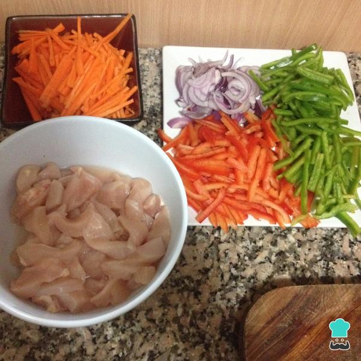

Tacos de pollo
Menú
Ingredientes (para 3 personas)
- 3 Pechugas de pollo
- 1 Pimiento rojo y verde
- 1 Cebolla blanca
- 2 Zanahorias
- 2 Cebolla de verdeo
- Pimentón y pimienta blanca (cantidad nec.)
- Aceite de girasol (cantidad nec.)
- Sal (cantidad nec.)
- 1 paquete de rapiditas
